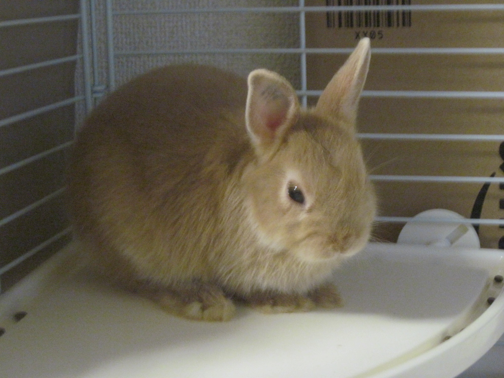

ムーのブログ
作成者
むねひろ

プロフィール
・未成年。５歳に初めてパソコンを触った。
・９歳最近は、プログラムスクラッチ並びにHTMLCSSを始めた
その完成形がこのホームページである。

僕の家にいるうさぎです！！
詳しくは、こちら まで！！
都市伝説情報ホームページは、 こちら まで！！
重要なお知らせ
今までの更新は、あくまでも、テストでの公開でした。そのため、今回、2018年3月25日をもちまして今までの更新記録を削除させていただきます。
ご覧になった方々には、大変、ご迷惑をおかげいたしますが、よろしくお願いいたします。
今後は、テストではなく、本格的に、不定期ではありますが、投稿を始めたいと思います。
ちなみに、新たに新企画を始めます！！！！！
なので終わりかと思った方、ご安心ください。しっかり続けますのでご安心ください。
間も無く、新企画が投稿されます。
新たに新ブログのサイトを作ります。
よろしくお願いします
新ブログのURL 準備中・・・・・・